|
FC Utrecht - Roda JC (4-4) 16 mei 2003 |
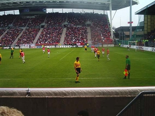
De Galgenwaard wordt nog altijd vernieuwd.
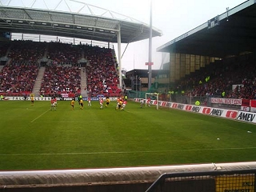
Mooie hoge en steile tribune.
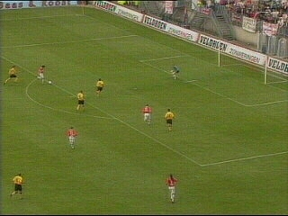
Al in de 2e min. kan Gluscevic 1-0 scoren na
een fout van Luijpers.
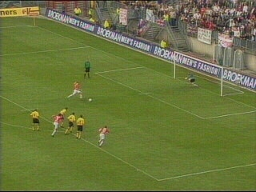
Addo veroorzaakt een penalty door Gluscovic
vast te houden. Kuijt verzilvert de strafschop en
zo is het na 8 minuten al 2-0.
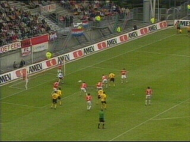
Cristiano scoort 2-1 uit een hoekschop (19').
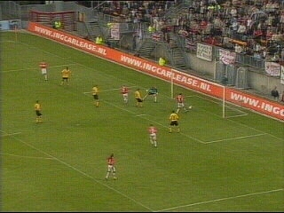
Na fraai passeerwerk van Van den Bergh kan
Gluscevic 3-1 binnentikken (41').
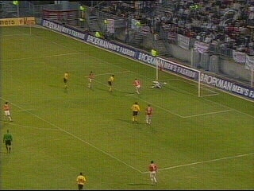
Sonkaya bereikt Anastasiou die perfect inkopt
en zo de achterstand verkleint tot 2-3 (59').
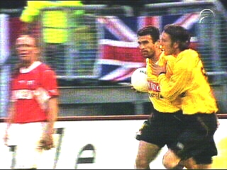
Vicelich feliciteert Anastasiou. Vreven baalt
een potje.
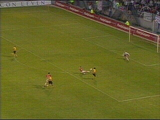
Anastasiou schiet via het been van Zwaanswijk
de gelijkmaker binnen: 3-3 (63').
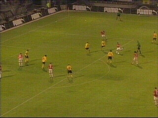
Na een langdurig spannend moment voor het
doelgebied van Kujovic scoort Chaiat met een
hard schot 4-3 (81').
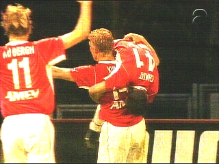
De Utrechtenaren wanen zich gewonnen.
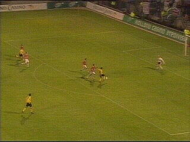
Anastasiou's hattrick! Roda haalt op de valreep
een punt in de Galgenwaard: 4-4 (85').
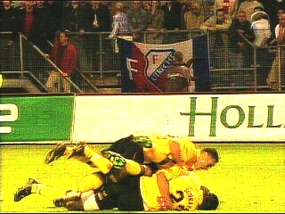
Enorme vreugde om dit zeer verdiende punt. De
kans op een Europees tickom dit zeer verdiende punt. De
kans op een Europees ticket blijft overeind!